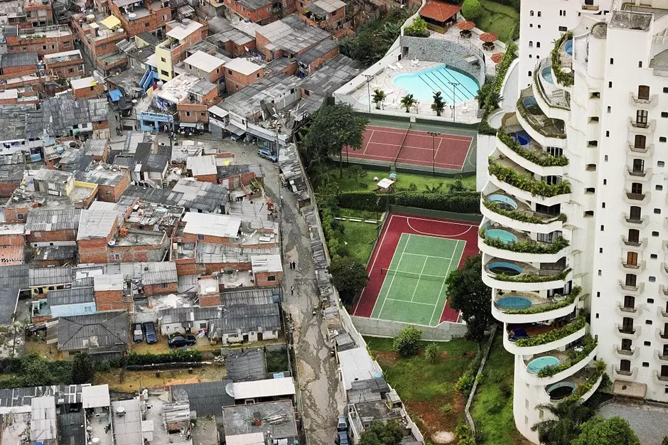

Dignidade
Ter uma casa adequada garante privacidade, segurança e melhores condições para viver em família.
Senador Canedo | Conhecimento e Sustentabilidade
Ter uma casa adequada garante privacidade, segurança e melhores condições para viver em família.
Moradias com água, saneamento e ventilação reduzem doenças e melhoram a saúde física e mental.
A localização da casa interfere no acesso à escola, ao trabalho, ao transporte, à saúde e ao lazer.
A moradia é o espaço onde as pessoas vivem e constroem sua vida cotidiana. Pode ser uma casa, apartamento ou outro tipo de habitação, mas não deve ser entendida apenas como um teto.
Para ser digna, precisa oferecer acesso à água potável, energia elétrica, saneamento básico, segurança e condições adequadas de convivência. Sem isso, aumentam os riscos de doenças, violência e exclusão social.

O direito à moradia está previsto na Constituição Federal de 1988 como um direito social. Isso significa que ele está ligado à dignidade da pessoa humana e à função social da propriedade.
Esse direito não significa apenas possuir uma casa. Ele envolve segurança da posse, infraestrutura básica, habitabilidade, localização adequada e custo compatível com a renda da família.
Apesar de garantido na lei, sua efetivação depende de políticas públicas, investimentos e planejamento urbano.

As moradias evoluíram de construções feitas com barro, madeira e pedra para casas e apartamentos com novos materiais, tecnologia, automação e melhor aproveitamento de espaço.
Casas antigas costumavam ter cômodos amplos e quintais grandes. Moradias atuais priorizam praticidade, condomínios, apartamentos compactos e manutenção reduzida.

A forma de morar também muda conforme a cultura, a renda, a região, as tradições, a religião e o modo de organização social de cada grupo.
Por isso, as moradias revelam muito sobre a identidade, as necessidades e as condições de vida da população.

A zona urbana possui maior concentração de pessoas, comércio, serviços, indústrias e infraestrutura. Já a zona rural tem menor densidade populacional, atividades agropecuárias, paisagens naturais e moradias mais afastadas.
Essa diferença mostra que o acesso à moradia digna também depende da região onde a pessoa vive e dos serviços disponíveis no local.
Superar a desigualdade de moradia exige ações públicas, planejamento das cidades e participação da sociedade.
Construção de casas e apartamentos para famílias de baixa renda.
Legalização de áreas ocupadas para garantir segurança e acesso a serviços.
Água tratada, esgoto e coleta de lixo para melhorar saúde e qualidade de vida.
Melhoria de moradias precárias para evitar riscos e acidentes.
Organização das cidades para evitar ocupações em áreas de risco.
Orientação sobre construção segura e cuidado com os espaços coletivos.
A desigualdade de moradia acontece quando uma parte da população vive em casas adequadas, com estrutura, segurança e acesso a serviços básicos, enquanto outra parte vive em condições precárias, como ocupações, áreas de risco, favelas ou até sem moradia.
Esse problema está ligado à falta de renda, ao desemprego e à má distribuição de recursos. Suas consequências aparecem no aumento de doenças, nos riscos de enchentes e deslizamentos, na dificuldade de estudar e na distância das oportunidades de trabalho.
